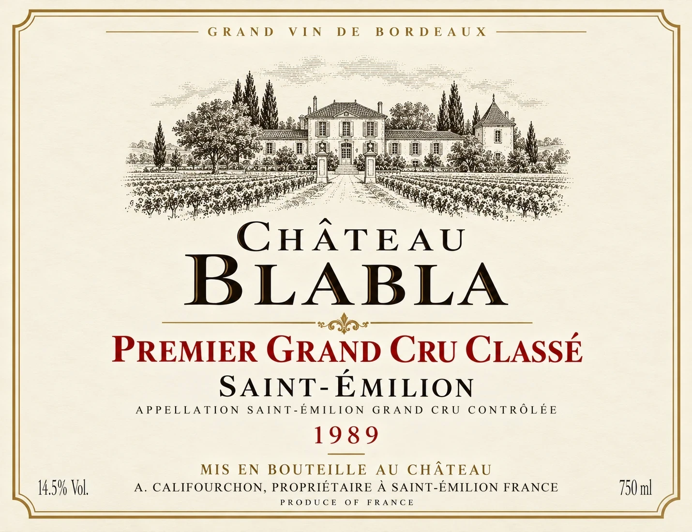
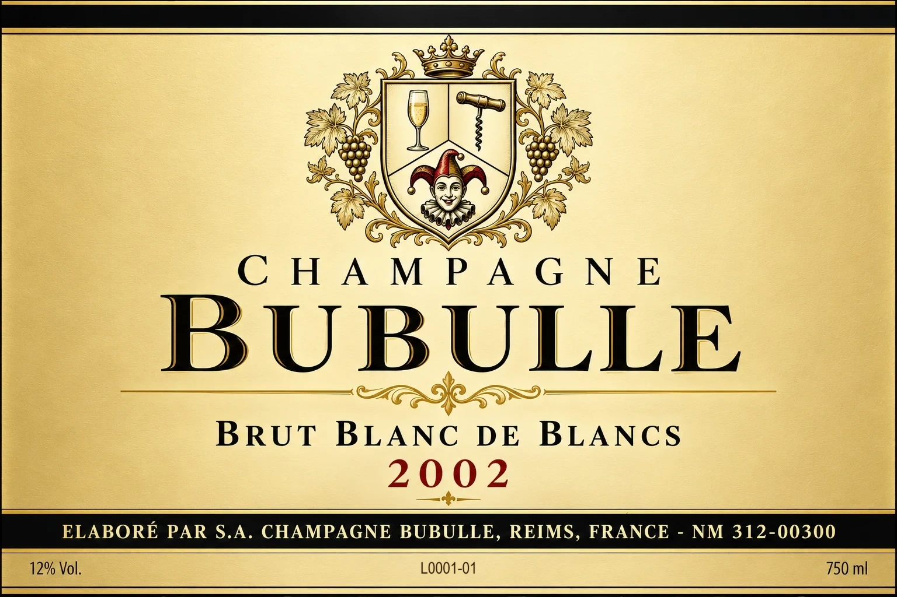

Le vin en bouteille
Apprendre à lire… une étiquette
Une étiquette française dit d’abord d’où vient le vin, avant de dire ce qu’il contient. Trois étiquettes commentées — Bordeaux, Bourgogne, Champagne — pour apprendre à la déchiffrer, puis ce que la loi impose aujourd’hui, ce qu’elle permet, et le vocabulaire à connaître.
01 · Bordeaux
Bordeaux et la plupart des étiquettes françaises
Ici, la vedette est le château : son nom domine, l’appellation vient ensuite. Château Blabla, Saint-Émilion, millésime 1989 — une étiquette imaginaire, créée pour ce site.

123456789101112Survolez ou touchez une étiquette pour lire l’explication ci-dessous.
- 1Unité géographique plus grande facultatif
« Grand Vin de Bordeaux » : beaucoup de cahiers des charges bordelais (celui de Pomerol, par exemple) autorisent « Vin de Bordeaux » ou « Grand Vin de Bordeaux », en caractères pas plus grands que les deux tiers de ceux du nom de l’appellation — c’est le cas ici. Malgré le mot « grand », ce n’est pas un gage de qualité.10
“Grand Vin de Bordeaux”: many Bordeaux specifications (Pomerol’s, for example) allow “Vin de Bordeaux” or “Grand Vin de Bordeaux”, in letters no larger than two thirds of those of the appellation name — as here. Despite the word “grand”, it is no guarantee of quality.10
- 2Illustration facultatif
La gravure du château, des armoiries, un sceau… : purement décoratif, et entièrement libre.
An engraving of the château, a coat of arms, a seal…: purely decorative, and entirely up to the producer.
- 3Nom de la propriété (château, domaine ou clos) facultatif
Le nom de l’exploitation, ici le château. En France, le mot « château » est réservé aux vins d’appellation issus d’une exploitation qui existe réellement sous ce nom, de raisins récoltés dans ses vignes et vinifiés sur place. Selon la région, on lit aussi « domaine » (en Bourgogne notamment) ou « clos », une vigne close, à l’origine entourée de murs.7
The name of the estate, here the château. In France the word “château” is reserved for appellation wines from a holding that really exists under that name, made from grapes harvested in its vineyards and vinified there. Depending on the region, you will also read “domaine” (in Burgundy especially) or “clos”, an enclosed vineyard, originally walled.7
- 4Classement (s’il existe) facultatif
« Premier Grand Cru Classé » renvoie au classement des vins de Saint-Émilion, créé en 1955 et révisé environ tous les dix ans (le dernier date de 2022). Le classement porte sur le château, pas sur l’appellation, et il est réservé aux vins de l’AOC « Saint-Émilion Grand Cru » — celle qu’indique la petite ligne de l’étiquette.9
“Premier Grand Cru Classé” refers to the Saint-Émilion classification, created in 1955 and revised roughly every ten years (the latest dates from 2022). The classification applies to the château, not to the appellation, and it is reserved for wines of the “Saint-Émilion Grand Cru” AOC — the one named on the label’s small line.9
- 5Appellation obligatoire
Le nom du lieu, en grand. Attention : « Saint-Émilion » est écrit en gros, mais l’appellation exacte est celle de la petite ligne en dessous : Saint-Émilion Grand Cru, une AOC distincte de Saint-Émilion, aux règles plus strictes.
The name of the place, in large letters. Careful: “Saint-Émilion” is printed large, but the exact appellation is the one on the small line below: Saint-Émilion Grand Cru, a separate AOC from Saint-Émilion, with stricter rules.
- 6Nom officiel de l’appellation obligatoire
« Appellation Saint-Émilion Grand Cru Contrôlée » : la mention légale, qui donne le nom exact de l’AOC. Aujourd’hui on peut écrire « Appellation d’Origine Contrôlée » ou « Appellation d’Origine Protégée ».1
“Appellation Saint-Émilion Grand Cru Contrôlée”: the legal statement, giving the exact name of the AOC. Today the label may say “Appellation d’Origine Contrôlée” or “Appellation d’Origine Protégée”.1
- 7
- 8Lieu de mise en bouteille facultatif
« Mis en bouteille au château » : le vin a été mis en bouteille sur la propriété qui a produit les raisins et fait le vin. C’est une mention facultative — ce qui est obligatoire, c’est le nom de l’embouteilleur.7
“Mis en bouteille au château” (estate bottled): the wine was bottled at the property that grew the grapes and made the wine. This statement is optional — what is compulsory is the name of the bottler.7
- 9Nom du propriétaire obligatoire
« A. Califourchon, Propriétaire à Saint-Émilion, France » : le nom et la commune de l’embouteilleur, mention obligatoire. « Propriétaire » précise son statut : le vin vient de ses propres vignes (un négociant, lui, achète raisins ou vins).2
“A. Califourchon, Propriétaire à Saint-Émilion, France”: the name and town of the bottler, a compulsory statement. “Propriétaire” (owner) gives his status: the wine comes from his own vines (a négociant, by contrast, buys grapes or wines).2
- 10
- 11
- 12
Une étiquette « millésime 1989 ». Comme une vraie étiquette de l’époque, il lui manque ce qu’exige une étiquette d’aujourd’hui : « contient des sulfites » (depuis 2005), le logo femme enceinte (2007), le numéro de lot et, pour les vins produits depuis décembre 2023, la valeur énergétique et le QR code des ingrédients.4,6,5,3
A “1989 vintage” label. Like a real label of the time, it lacks what a label needs today: “contains sulphites” (since 2005), the pregnancy logo (2007), the lot number and, for wines produced since December 2023, the energy value and the ingredients QR code.4,6,5,3
02 · Bourgogne
La Bourgogne et les autres
Ici, l’étiquette met en avant le lieu : le village, son classement, puis le climat — le nom du domaine est souvent bien en vue lui aussi. Domaine Coullenot, Beaune Premier Cru « Les Grèves », millésime 2019 — une étiquette imaginaire, créée pour ce site.
 12345678910111213
12345678910111213Survolez ou touchez une étiquette pour lire l’explication ci-dessous.
- 1Illustration facultatif
Des armoiries — ici fantaisistes : un verre, un tire-bouchon et un bouffon. Purement décoratif, et entièrement libre.
A coat of arms — a whimsical one here: a glass, a corkscrew and a jester. Purely decorative, and entirely up to the producer.
- 2Nom du domaine facultatif
« Domaine Coullenot » : en Bourgogne on parle de domaine plutôt que de château — l’ensemble des vignes d’un même producteur, souvent au nom de la famille. Il est placé ici sous l’appellation : en Bourgogne, l’étiquette met volontiers le lieu en avant.
“Domaine Coullenot”: in Burgundy one speaks of a domaine rather than a château — all the vines of a single producer, often under the family name. Here it sits below the appellation: Burgundy labels like to put the place first.
- 3Nom de l’appellation obligatoire
En Bourgogne, c’est souvent le village qui donne son nom au vin : ici Beaune. La hiérarchie va des appellations régionales (Bourgogne) aux villages, puis aux premiers crus et aux grands crus.12
In Burgundy the village often gives the wine its name: here Beaune. The hierarchy runs from regional appellations (Bourgogne) to villages, then premiers crus and grands crus.12
- 4Classement facultatif
« 1er Cru » : le vin vient d’un climat classé premier cru de Beaune ; l’appellation complète est « Beaune Premier Cru ». Beaune n’a pas de grand cru : le premier cru est le sommet de la commune.12
“1er Cru”: the wine comes from a climat classified as a Beaune premier cru; the full appellation is “Beaune Premier Cru”. Beaune has no grand cru: premier cru is the top of the commune.12
- 5Nom du « climat » facultatif
« Les Grèves » est un climat — une parcelle nommée, délimitée depuis des siècles — classé premier cru de Beaune. Les Climats de Bourgogne sont inscrits au patrimoine mondial de l’UNESCO depuis 2015.12
“Les Grèves” is a climat — a named plot, mapped for centuries — classified as a Beaune premier cru. The Climats of Burgundy have been on UNESCO’s World Heritage list since 2015.12
- 6Mention d’appellation obligatoire
« Appellation Beaune 1er Cru Contrôlée » : la mention légale, qui donne le nom exact de l’AOC. Aujourd’hui on peut aussi écrire « Appellation d’Origine Protégée ».1
“Appellation Beaune 1er Cru Contrôlée”: the legal statement, giving the exact name of the AOC. Today the label may also say “Appellation d’Origine Protégée”.1
- 7Millésime facultatif
L’année de la récolte : facultatif, mais au moins 85 % des raisins de cette année-là. En Bourgogne, il figure souvent sur la collerette, la petite étiquette du col ; ici, il est sur l’étiquette principale.2
The year of the harvest: optional, but at least 85 % of the grapes from that year. In Burgundy it is often printed on the neck label; here it is on the main label.2
- 8Lieu de mise en bouteille facultatif
« Mis en bouteille au Domaine » : la version bourguignonne de « mis en bouteille au château » — le vin a été mis en bouteille par le domaine qui a fait le vin.7
“Mis en bouteille au Domaine” (domaine bottled): the Burgundy version of “mis en bouteille au château” — the wine was bottled by the domaine that made it.7
- 9Nom et statut du producteur facultatif
« N. Coullenot, Propriétaire » : le nom de l’exploitant, suivi de son statut. « Propriétaire » : le vin vient des vignes du signataire. Un « négociant-éleveur » achète raisins, moûts ou vins pour les élever et les vendre sous son nom.
“N. Coullenot, Propriétaire”: the grower’s name, followed by their status. “Propriétaire” (owner): the wine comes from the signatory’s own vines. A “négociant-éleveur” buys grapes, musts or wines to age and sell them under its own name.
- 10Adresse de l’embouteilleur obligatoire
« à Beaune “La Montagne” » : la commune (et ici le lieu-dit) de l’embouteilleur. Avec le nom « N. Coullenot », elle identifie l’embouteilleur : mention obligatoire.2
“à Beaune ‘La Montagne’”: the bottler’s town (and here its locality). Together with the name “N. Coullenot”, it identifies the bottler: compulsory.2
- 11
- 12
- 13
Et le reste ? « Contient des sulfites », le logo femme enceinte et le numéro de lot figurent le plus souvent sur la contre-étiquette, au dos de la bouteille. Un millésime 2019 n’a pas à porter de valeur énergétique : elle n’est obligatoire que pour les vins produits depuis le 8 décembre 2023.4,6,5,3
And the rest? “Contains sulphites”, the pregnancy logo and the lot number usually appear on the back label. A 2019 vintage need not show an energy value: it is only compulsory for wines produced since 8 December 2023.4,6,5,3
03 · Champagne
Le champagne , une étiquette à part
Ici, la vedette est la marque : on achète une maison plus qu’un lieu. Et un vin mousseux doit dire sa teneur en sucre. Champagne Bubulle, Brut Blanc de Blancs 2002 — une étiquette imaginaire, créée pour ce site.

12345678910Survolez ou touchez une étiquette pour lire l’explication ci-dessous.
- 1Illustration facultatif
Les mêmes armoiries fantaisistes, cette fois avec une flûte de champagne. Purement décoratif.
The same whimsical coat of arms, this time with a champagne flute. Purely decorative.
- 2Nom de l’appellation obligatoire
« Champagne » : le nom de l’appellation. Particularité, une exception propre au champagne : le seul mot « Champagne » suffit, sans la mention « Appellation d’Origine Contrôlée ».11
“Champagne”: the name of the appellation. A peculiarity, an exception specific to champagne: the word “Champagne” alone is enough, without the words “Appellation d’Origine Contrôlée”.11
- 3Marque facultatif
« Bubulle » : la marque de la maison. En Champagne, on achète souvent une marque plutôt qu’un lieu : la plupart des champagnes assemblent des raisins de nombreuses communes.11
“Bubulle”: the house’s brand. In Champagne you often buy a brand rather than a place: most champagnes blend grapes from many villages.11
- 4
- 5Blanc de blancs facultatif
Élaboré uniquement à partir de raisins blancs — en Champagne, essentiellement le chardonnay. À l’inverse, un « blanc de noirs » vient seulement de raisins noirs (pinot noir, meunier).11
Made only from white grapes — in Champagne, essentially chardonnay. Conversely, a “blanc de noirs” comes only from black grapes (pinot noir, meunier).11
- 6Millésime facultatif
Un champagne millésimé : il ne peut être mis en vente qu’au moins 36 mois après le tirage en bouteille (15 mois pour un champagne sans millésime), et l’année doit aussi figurer sur le bouchon. La plupart des champagnes sont sans millésime, assemblés avec des vins de réserve.11
A vintage champagne: it may be sold no earlier than 36 months after bottling (15 months for a non-vintage champagne), and the year must also appear on the cork. Most champagnes are non-vintage, blended with reserve wines.11
- 7Propriétaire : nom et adresse obligatoire
« Élaboré par S.A. Champagne Bubulle, Reims, France » : le nom de l’élaborateur, en toutes lettres, et sa commune. Pour un vin mousseux, c’est le producteur (ou le vendeur) qui doit figurer. Mention obligatoire.2,11
“Élaboré par S.A. Champagne Bubulle, Reims, France” (made by): the producer’s name, in full, and its town. For a sparkling wine, it is the producer (or the vendor) that must be shown. Compulsory.2,11
- 8Code du producteur obligatoire
« NM 312-00300 » : le numéro d’immatriculation du Comité Champagne, exigé par le cahier des charges. Les deux lettres disent qui a élaboré le vin : NM = négociant-manipulant, une maison qui achète raisins ou vins (voir les codes plus bas).11,13
“NM 312-00300”: the Comité Champagne registration number, required by the specification. The two letters tell you who made the wine: NM = négociant-manipulant, a house that buys grapes or wines (see the codes below).11,13
- 9
- 10
Regardez aussi le bouchon. Il porte le nom de l’appellation et, pour un champagne millésimé, l’année. Comme ailleurs, « contient des sulfites », le logo femme enceinte et le numéro de lot sont le plus souvent sur la contre-étiquette.11,4,6,5
Look at the cork too. It bears the name of the appellation and, for a vintage champagne, the year. As elsewhere, “contains sulphites”, the pregnancy logo and the lot number are usually on the back label.11,4,6,5
04 · La règle
Obligatoire ou facultatif ?
Ce qu’une bouteille vendue en France doit porter en 2026, et ce qu’elle peut ajouter. La plupart des mentions obligatoires doivent se lire dans le même champ visuel, sans tourner la bouteille — sauf notamment le numéro de lot, les allergènes et l’importateur.
Obligatoire
La dénomination
Le nom de l’appellation avec « Appellation d’Origine Protégée » ou la mention traditionnelle « Appellation … Contrôlée » ; pour une IGP, « Indication Géographique Protégée » (ou « Vin de Pays ») ; sinon « Vin de France ».1
The name of the appellation with “Appellation d’Origine Protégée” or the traditional “Appellation … Contrôlée”; for a PGI, “Indication Géographique Protégée” (or “Vin de Pays”); otherwise “Vin de France”.1
Le volume nominal
En litres, centilitres ou millilitres : 75 cl, 150 cl…1
In litres, centilitres or millilitres: 75 cl, 150 cl…1
La provenance
« Produit de France », ou le pays de production.1
“Produit de France” (Product of France), or the country of production.1
L’embouteilleur
Son nom et sa commune (« mis en bouteille par… »). Pour les vins mousseux, le producteur ou le vendeur ; pour un vin importé, l’importateur.2
Its name and town (“bottled by…”). For sparkling wines, the producer or vendor; for an imported wine, the importer.2
Les allergènes
« Contient des sulfites » dès 10 mg/L — c’est-à-dire presque toujours — et, le cas échéant, les protéines d’œuf ou de lait utilisées pour le collage.4
“Contains sulphites” from 10 mg/L — that is, almost always — and, where relevant, egg or milk proteins used for fining.4
Le numéro de lot
Souvent une courte référence précédée de « L », parfois gravée sur le verre.5
Often a short code starting with “L”, sometimes etched on the glass.5
Le logo « femme enceinte »
Obligatoire en France depuis 2007 (ou la phrase équivalente).6
Compulsory in France since 2007 (or the equivalent sentence).6
La valeur énergétique
Pour les vins produits depuis le 8 décembre 2023 : les calories figurent sur l’étiquette (parfois sous la forme « E = … kcal/100 ml ») ; la liste des ingrédients et la déclaration nutritionnelle complète peuvent être consultées via un QR code.3
For wines produced since 8 December 2023: the calories are on the label (sometimes as “E = … kcal/100 ml”); the list of ingredients and the full nutrition declaration may be given through a QR code.3
Facultatif
Le millésime
Au moins 85 % des raisins de l’année indiquée.2
At least 85 % of the grapes from the year shown.2
Le cépage
Un seul cépage nommé : au moins 85 % de ce cépage. Deux cépages ou plus : ils doivent faire 100 % du vin et être cités par ordre d’importance. Beaucoup d’AOC ne le mentionnent pas : c’est le lieu qui compte.2
One variety named: at least 85 % of that variety. Two or more: they must make up 100 % of the wine and be listed in order of importance. Many AOCs leave it out: the place is what matters.2
Le nom de l’exploitation
« Château », « Clos », « Domaine »… Les termes « château », « clos » et « cru » sont réservés aux vins d’appellation.7
“Château”, “Clos”, “Domaine”… The terms “château”, “clos” and “cru” are reserved for appellation wines.7
Un classement
« Grand Cru Classé en 1855 », « Premier Grand Cru Classé », « Cru Bourgeois », « Premier Cru », « Grand Cru »… seulement s’il est officiellement reconnu.
“Grand Cru Classé en 1855”, “Premier Grand Cru Classé”, “Cru Bourgeois”, “Premier Cru”, “Grand Cru”… only if officially recognised.
Une unité géographique
Plus petite (un climat, un lieu-dit) ou plus grande (« Vin de Bordeaux »), dans les limites fixées par le cahier des charges.
Smaller (a climat, a lieu-dit) or larger (“Vin de Bordeaux”), within the limits set by the specification.
La mise à la propriété
« Mis en bouteille au château / au domaine / à la propriété ».7
“Mis en bouteille au château / au domaine / à la propriété”.7
Les mentions traditionnelles
« Sur lie » (Muscadet), « Vendanges tardives », « Sélection de grains nobles », « Primeur », « Clairet »… chacune encadrée par les textes.
“Sur lie” (Muscadet), “Vendanges tardives”, “Sélection de grains nobles”, “Primeur”, “Clairet”… each one regulated.
Le bio
Si le vin est certifié biologique et l’indique, le logo bio européen est obligatoire ; le logo français AB est facultatif.8
If the wine is certified organic and says so, the EU organic logo is compulsory; the French AB logo is optional.8
Les mots sans définition légale
« Vieilles vignes », « Grand vin », « Réserve », « Cuvée prestige »… n’engagent que le producteur.
“Vieilles vignes” (old vines), “Grand vin”, “Réserve”, “Cuvée prestige”… commit no one but the producer.
05 · Le vocabulaire
Les mots de l’étiquette
Le sucre : vins tranquilles
| Mention | Sucres |
|---|---|
| Sec | ≤ 4 g/L (jusqu’à 9 g/L si l’acidité est élevée) |
| Demi-sec | ≤ 12 g/L (jusqu’à 18 g/L si l’acidité est élevée) |
| Moelleux | ≤ 45 g/L |
| Doux | ≥ 45 g/L |
Le sucre : vins mousseux
| Mention | Sucres |
|---|---|
| Brut nature | < 3 g/L, sans sucre ajouté |
| Extra brut | 0 à 6 g/L |
| Brut | < 12 g/L |
| Extra dry | 12 à 17 g/L |
| Sec | 17 à 32 g/L |
| Demi-sec | 32 à 50 g/L |
| Doux | > 50 g/L |
Sucres résiduels, en grammes par litre.2
Champagne : le code du producteur
Deux lettres et un numéro, en petits caractères : ils disent qui a élaboré le champagne.13
Two letters and a number, in small print: they tell you who made the champagne.13
| NM | Négociant-manipulant une maison qui achète raisins ou vins et élabore le champagne sous sa marque |
| RM | Récoltant-manipulant un vigneron qui élabore le champagne de ses propres raisins |
| CM | Coopérative de manipulation une coopérative qui élabore le champagne de ses adhérents |
| RC | Récoltant-coopérateur un vigneron qui vend sous son nom un champagne élaboré par sa coopérative |
| SR | Société de récoltants une société de vignerons d’une même famille qui élaborent ensemble |
| ND | Négociant distributeur un distributeur qui achète des champagnes finis et les vend sous son étiquette |
| MA | Marque auxiliaire / d’acheteur une marque appartenant à l’acheteur (enseigne, restaurant…) |
Château
Une exploitation viticole d’appellation, surtout dans le Bordelais — il n’y a pas toujours de château au sens du bâtiment.
An appellation wine estate, mostly in Bordeaux — there is not always a castle-like building.
Domaine
L’équivalent bourguignon (et général) : l’ensemble des vignes d’un même producteur.
The Burgundian (and general) equivalent: all the vines of a single producer.
Clos
Une vigne close, à l’origine entourée de murs (Clos de Vougeot, Clos des Mouches…).
An enclosed vineyard, originally walled (Clos de Vougeot, Clos des Mouches…).
Climat
En Bourgogne, une parcelle nommée et délimitée depuis des siècles, avec son sol et son exposition propres.
In Burgundy, a named plot mapped for centuries, with its own soil and exposure.
Lieu-dit
Un nom de lieu cadastral, qui peut figurer sur l’étiquette si le cahier des charges le permet.
A cadastral place name, which may appear on the label when the specification allows it.
Cru
Littéralement « ce qui a poussé » : un terroir réputé. Le sens exact change d’une région à l’autre.
Literally “what has grown”: a renowned terroir. Its exact meaning changes from one region to another.
Grand cru / Premier cru
En Bourgogne, des climats classés (le grand cru est au sommet) ; en Alsace et en Champagne, d’autres systèmes ; dans le Bordelais, des châteaux classés.
In Burgundy, classified climats (grand cru at the top); in Alsace and Champagne, other systems; in Bordeaux, classified châteaux.
Négociant-éleveur
Achète raisins, moûts ou vins, les élève et les met en bouteille sous son nom.
Buys grapes, musts or wines, ages them and bottles them under its own name.
Cave coopérative
Les vignerons adhérents apportent leurs raisins ; le vin est fait et vendu en commun (« Les Vignerons de… »).
Member growers bring in their grapes; the wine is made and sold jointly (“Les Vignerons de…”).
Élevé en fût de chêne
Le vin a séjourné en barriques ou en foudres avant la mise en bouteille.
The wine spent time in barrels or large casks before bottling.
Sources
- Règlement (UE) n° 1308/2013 portant organisation commune des marchés, art. 119 et 120 (mentions obligatoires et facultatives des vins). EUR-Lex
- Règlement délégué (UE) 2019/33 de la Commission : présentation et étiquetage des vins (même champ visuel, tolérance de ±0,5 % vol, millésime et cépage à 85 %, teneur en sucre). EUR-Lex
- Règlement (UE) 2021/2117 : liste des ingrédients et déclaration nutritionnelle des vins produits à partir du 8 décembre 2023 (valeur énergétique sur l’étiquette, le reste possible par voie électronique). EUR-Lex
- Règlement (UE) n° 1169/2011 (information des consommateurs), annexe II : allergènes, dont l’anhydride sulfureux et les sulfites au-delà de 10 mg/L — mention « contient des sulfites » obligatoire sur les vins depuis 2005 (directive 2003/89/CE).
- Directive 2011/91/UE relative aux mentions permettant d’identifier le lot auquel appartient une denrée alimentaire.
- Code de la santé publique, art. L. 3322-2, et arrêté du 2 octobre 2006 : message sanitaire à destination des femmes enceintes (pictogramme), obligatoire depuis octobre 2007.
- Décret n° 2012-655 du 4 mai 2012 relatif à l’étiquetage et à la traçabilité des produits vitivinicoles (termes « château », « clos », « cru » ; mise en bouteille à la propriété), codifié au code rural et de la pêche maritime.
- Règlement (UE) 2018/848 relatif à la production biologique : logo de production biologique de l’Union européenne.
- INAO, classement des vins de l’appellation « Saint-Émilion Grand Cru » (1955, révisé ; classement 2022, homologué le 7 septembre 2022). Voir aussi la page « Les classements » du site.
- Cahier des charges de l’AOC « Pomerol », homologué par l’arrêté du 12 octobre 2021, chapitre I, XII b (unité géographique plus grande « Vin de Bordeaux » / « Grand Vin de Bordeaux »). Voir la bibliothèque des décrets du site.
- Cahier des charges de l’AOC « Champagne », homologué par l’arrêté du 31 juillet 2025 : couleurs et blanc de blancs, mise en marché après 15 mois (36 mois pour les millésimés), millésime sur le bouchon, élaborateur en toutes lettres, immatriculations du Comité Champagne. Voir la bibliothèque des décrets du site.
- Bureau interprofessionnel des vins de Bourgogne (BIVB), la hiérarchie des appellations (régionales, villages, premiers crus, grands crus) ; UNESCO (2015), « Les Climats du vignoble de Bourgogne », patrimoine mondial.
- Comité Champagne : immatriculation professionnelle portée sur l’étiquette (NM, RM, CM, RC, SR, ND, MA).
D’après la fiche « How to Read a French Wine Label » de Christophe A. Paul (2010), mise à jour et augmentée. Étiquettes imaginaires créées pour ce site : Château Blabla 1989 ; Domaine Coullenot, Beaune 1er Cru « Les Grèves » 2019 ; Champagne Bubulle, Brut Blanc de Blancs 2002.